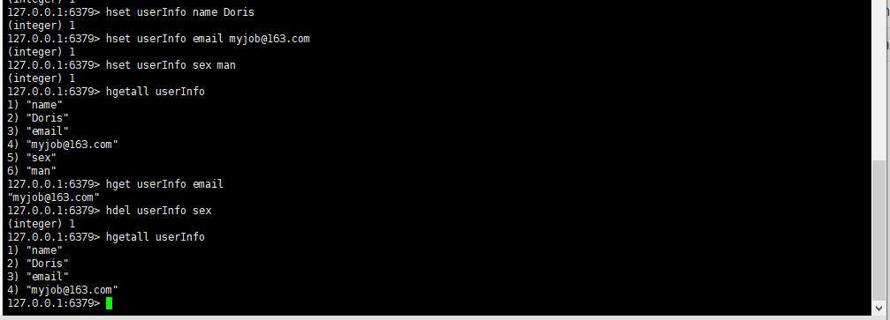

Redis是一个由 Salvatore Sanfilippo 写的 key-value 存储系统，是非关系型数据库。
它支持丰富的数据类型，以内存作为数据存储介质，所以读写数据的效率极高。
连接
1 | redis-cli // 本地连接，默认-h为localhost, -p默认为3306 |
- 从上面的连接命令来看redis中没有账号的说法
- redis中没有表的概念
- redis中的数据是以键值对的格式进行存储的
- redis中的数据是存储到内存中的
- redis在正常关闭或者重启（例如在linux服务器上systemctl命令关闭或者重启redis）的时候，会提前把数据（不包含密码）保存到一个文件中，然后当我们下次启动redis时候，再从文件中，把数据加载到内存中，非正常关闭Redis服务时（例如断电），数据丢失不会保存
- 内存的读写速度是硬盘的300倍以上
- redis中的数据操作的速度是MySQL的300倍以上
- redis一般用于软件的缓存数据进行存储
数据格式

| String字符串 | 可以是字符串、整数或浮点数 | 对整个字符串或字符串的一部分进行操作；对整数或浮点数进行自增或自减操作； |
| List列表 | 一个链表，链表上的每个节点都包含一个字符串 | 对链表的两端进行push和pop操作，读取单个或多个元素；根据值查找或删除元素； |
| Set集合 | 包含字符串的无序集合 | 字符串的集合，包含基础的方法有看是否存在添加、获取、删除；还包含计算交集、并集、差集等 |
| Hash散列 | 包含键值对的无序散列表 | 包含方法有添加、获取、删除单个元素,特别适合存储对象 |
| Zset有序集合 | 和散列一样，用于存储键值对 | 字符串成员与浮点数分数之间的有序映射；元素的排列顺序由分数的大小决定；包含方法有添加、获取、删除单个元素以及根据分值范围或成员来获取元素 |
数据库的操作
String字符串
| 命令 | 简述 | 使用 |
|---|---|---|
| GET | 获取存储在给定键中的值 | GET key_Name |
| SET | 设置存储在给定键中的值 | SET key_name value |
| DEL | 删除存储在给定键中的值 | DEL key_name |
| INCR | 将键存储的值加1 | INCR key |
| DECR | 将键存储的值减1 | DECR key |
| INCRBY | 将键存储的值加上整数 | INCRBY key amount |
| DECRBY | 将键存储的值减去整数 | DECRBY key amount |
实战场景
缓存： 经典使用场景，把常用信息，字符串，图片或者视频等信息放到redis中，redis作为缓存层，mysql做持久化层，降低mysql的读写压力。
计数器：redis是单线程模型，一个命令执行完才会执行下一个，同时数据可以一步落地到其他的数据源。
session：常见方案spring session + redis实现session共享，
List列表
Redis中的List其实就是链表（Redis用双端链表实现List），相同的元素可以充分出现
| 命令 | 简述 | 使用 |
|---|---|---|
| RPUSH | 将给定值推入到列表右端 | RPUSH key value |
| LPUSH | 将给定值推入到列表左端 | LPUSH key value |
| RPOP | 从列表的右端弹出一个值，并返回被弹出的值 | RPOP key |
| LPOP | 从列表的左端弹出一个值，并返回被弹出的值 | LPOP key |
| LRANGE | 获取列表在给定范围上的所有值 | LRANGE key 0 -1 |
| LINDEX | 通过索引获取列表中的元素。你也可以使用负数下标，以 -1 表示列表的最后一个元素， -2 表示列表的倒数第二个元素，以此类推。 | LINEX key index |
使用列表的技巧
- lpush+lpop=Stack(栈)
- lpush+rpop=Queue（队列）
- lpush+ltrim=Capped Collection（有限集合）
- lpush+brpop=Message Queue（消息队列）
实战场景
微博TimeLine: 有人发布微博，用lpush加入时间轴，展示新的列表信息。
**消息队
Set集合
Redis 的 Set 是 String 类型的无序集合。集合成员是唯一的，这就意味着集合中不能出现重复的数据。
| 命令 | 简述 | 使用 |
|---|---|---|
| SADD | 向集合添加一个或多个成员 | SADD key value |
| SCARD | 获取集合的成员数 | SCARD key |
| SMEMBERS | 返回集合中的所有成员 | SMEMBERS key |
| SISMEMBER | 判断 member 元素是否是集合 key 的成员 | SISMEMBER key member |
实战场景
标签（tag）,给用户添加标签，或者用户给消息添加标签，这样有同一标签或者类似标签的可以给推荐关注的事或者关注的人。
点赞，或点踩，收藏等，可以放到set中实现
Hash散列/哈希
Redis hash 是一个 string 类型的 field（字段） 和 value（值） 的映射表，hash 特别适合用于存储对象。
| 命令 | 简述 | 使用 |
|---|---|---|
| HSET | 添加键值对 | HSET hash-key sub-key1 value1 |
| HGET | 获取指定散列键的值 | HGET hash-key key1 |
| HGETALL | 获取散列中包含的所有键值对 | HGETALL hash-key |
| HDEL | 如果给定键存在于散列中，那么就移除这个键 | HDEL hash-key sub-key1 |

实战场景
缓存： 能直观，相比string更节省空间，的维护缓存信息，如用户信息，视频信息等。
Zset 有序集合
Redis 有序集合和集合一样也是 string 类型元素的集合,且不允许重复的成员。不同的是每个元素都会关联一个 double 类型的分数。redis 正是通过分数来为集合中的成员进行从小到大的排序。
| 命令 | 简述 | 使用 |
|---|---|---|
| ZADD | 将一个带有给定分值的成员添加到有序集合里面 | ZADD zset-key 178 member1 |
| ZRANGE | 根据元素在有序集合中所处的位置，从有序集合中获取多个元素 | ZRANGE zset-key 0-1 withccores |
| ZREM | 如果给定元素成员存在于有序集合中，那么就移除这个元素 | ZREM zset-key member1 |
**Keys * **：查看所有Key
实战场景
排行榜：有序集合经典使用场景。例如小说视频等网站需要对用户上传的小说视频做排行榜，榜单可以按照用户关注数，更新时间，字数等打分，做排行
保存
save
安全
设置密码：config set requirepass 密码 （这里的密码上临时的密码，重启redis后会消失）
认证：auth 密码
redis的设置，
redis配置文件：/etc/redis.conf
bind: 绑定IP，作用和MySQL的账号设置中的主机作用一样，限制那个IP来连接redis，默认本机IP127.0.0.1，放开0.0.0.0
port：端口号，默认6379
dir：保存的数据文件的路径
dbfilename：保存数据的文件的名字
requirepass：密码
以上配置修改后，需要重启redis
参考文档：
https://pdai.tech/md/db/nosql-redis/db-redis-data-types.html